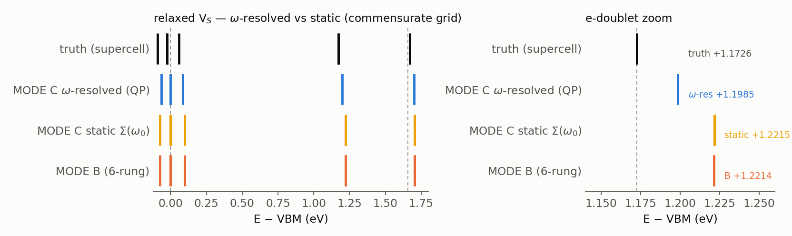
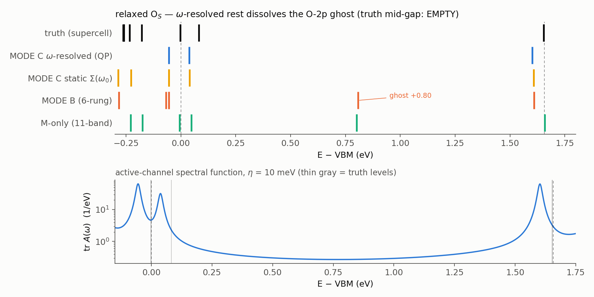

Contents
Erratum & major update (2026-08-06). Three corrections against the first version of this page. (i) Every "bare-150 (2nd order)" row was inflated by a factor $N_k=36$ (a missing $1/N_k$ in the gate script, not in any production code); all bare rows and figures below are corrected. (ii) The MODE B 6-rung ladder was found to under-converge one collective rest mode that the plain-ladder divergence ($\rho=1.215$) had always implied: a dressed rest state sits only $0.28$ eV from $\omega_0$, and the deflated ladder's measured 0.06–0.13 contraction is a source-global number that hides a $\rho\to 1$ channel. Its gap-window level errors stay $\le 22$ meV for V$_S$/Sdisp/Se$_S$ (those headline numbers stand), but MODE B's $\Sigma$ is not an exact rest inversion, and for O$_S$ the deficiency is qualitative — see (iii). (iii) Section 6's original claim that "the O-2p ghost survives static dressing" was an artifact of (ii): a correctly computed static $\Sigma(\omega_0)$ (and even the corrected bare row) already relocates the ghost. The $\chi$-augmentation is an alternative, not a necessity, for O$_S$. The $\omega$-resolved results (new section 7) supersede that narrative.
1. What is compared
All methods diagonalize the same effective Hamiltonian $H_{\rm eff}=\mathrm{diag}(\varepsilon_A)+(M+\Sigma)\,R_y/N_k$ on the 6$\times$6 grid (the grid whose $H_{\rm eff}$ is the supercell-array problem, so its eigenvalues compare level-by-level with the supercell $\Gamma$ spectrum — the like-for-like "truth gate"). The methods differ only in the rest-space self-energy $\Sigma$:
| method | $\Sigma$ |
|---|---|
| M-only | none (pure 11-band explicit block) |
| bare 2nd order | $V_{AR}\,G^0_R\,V_{RA}$ over the explicit $\le$150 bands |
| MODE A | $R_1$ ($\le$150) dressed to all orders in $\Delta V$; no genuine $>$150 tail |
| MODE B (two-level full) | $R_1$ exact ($D_1$, zheevd) + physical $>$150 tail via the Sternheimer ladder (Schur-partitioned; see the Deflated ladder page) |
Setup: non-SOC, MoS$_2$ 6$\times$6, $\omega_0$ at the VBM, active = the 11-band $d$+$p$ manifold (396 states), $R_1$ = the other 139 NSCF bands (5004 states), ladder with 4–6 rungs (measured contraction 0.06–0.13 per rung).
2. S-displacement probe (weak, sharp perturbation)
One S displaced $+0.30$ Å along $z$. The exact gap is clean; the CBM doublet sits at $+6.5$ meV (2$\times$).

| method | CBM doublet (meV) | gap |
|---|---|---|
| truth | $+6.5$ / $+6.5$ | clean |
| M-only | $+19.3$ / $+19.4$ | stray state $+73$ meV |
| bare 2nd order (corrected) | $-3.6$ / $-3.5$ | clean; one stray edge state $+11.7$ meV |
| MODE A (no tail) | $+16.8$ / $+17.0$ | spurious deep state at $-199$ meV |
| MODE B | $+8.2$ / $+8.5$ | clean |
3. Relaxed V$_S$ (strong defect — the original nemesis)
The sulfur vacancy with the relaxed C$_3$ shell, the system whose gap $e$-doublet historically read $+217$ meV too high with a truncated basis and $+41$ meV with the best multi-center $\chi$ augmentation.

| method | gap $e$-doublet (eV, rel. VBM) | error | gap |
|---|---|---|---|
| truth | $+1.1726$ (2$\times$) | — | clean |
| M-only | missing entirely | $>$0.5 eV | — |
| bare 2nd order (corrected) | doublet missed ($+1.579/+1.611$) | $+0.41$ eV | clean but wrong |
| MODE B | $+1.183$ / $+1.212$ | $+10$ / $+39$ meV | clean |
No augmentation orbitals, no tunable hyperparameters: the $+10/+39$ meV accuracy comes from first principles (exact $R_1$ inverse + the dressed physical tail), matching or beating the best hand-tuned $\chi$ result on the defect class that motivated the whole program.
4. Engineering numbers
| item | value |
|---|---|
| MODE A gate vs independent python Schur | $6.3\times10^{-16}$ Ry |
| ladder vs exact zgesv (model tail) | $2\times10^{-11}$ Ry |
| measured rung contraction (physical sources) | 0.06–0.13 (worst-mode $\rho$: 0.15–0.32) |
| full V$_S$ chain (SCF $\to$ cubes $\to$ block $\to$ MODE B $\to$ gate) | 40 min (1 node) |
| MODE B memory (v2: sliced channels + streamed $x$) | $\sim$5 GB/rank (was $\sim$30) |
5. Head-to-head: the previous production method ($\chi$ augmentation) on the same system
The pre-Sternheimer production recipe — full diagonalization of the explicit $\le$150-band $H_{\rm eff}$ with multi-center $\chi$ augmentation (the same 10-center set that produced the historical $+217\to+41$ meV SOC calibration ladder: 3 Mo + 7 S cage, Gram-truncated) — rerun on the identical non-SOC 6$\times$6 relaxed V$_S$ inputs (same cubes, same $\omega_0$), via EDI-direct + $\chi$ against a commensurate-grid twin of the same NSCF.

| method | gap $e$-doublet (eV, rel. VBM) | error | basis engineering |
|---|---|---|---|
| truth | $+1.1726$ (2$\times$) | — | — |
| explicit-150, no $\chi$ | $+1.3516$ (2$\times$) | $+179$ meV | none (the phantom) |
| explicit-150 + $\chi$, keep=30 | $+1.2077$ (2$\times$) | $+35$ meV | 10-center $\chi$ set + keep |
| explicit-150 + $\chi$, keep=38 | $+1.2038$ (2$\times$) | $+31$ meV (saturated) | 10-center $\chi$ set + keep |
| MODE B (two-level) | $+1.183$ / $+1.212$ | $+10$ / $+39$ meV | none |
Read: on the vacancy class the two cures are equally accurate (both land the doublet in the $\sim$30 meV static-$\omega_0$ band; centroids $+33$ vs $+25$ meV). The differences are structural: $\chi$ preserves the $e$-degeneracy exactly but needs a defect-specific orbital set and a truncation parameter scanned to saturation; the two-level ladder needs no defect-specific input at all — and it also fixes the VBM-edge window ($\chi$: uniform $\sim+30$ meV overshoot on all four edge states; the no-$\chi$ a$_1$ phantom $+0.296\to+0.089$/$+0.091$ under either cure vs truth $+0.060$). Non-SOC replication of the historical ladder: $+179 \to +31$ meV here vs $+217 \to +41$ with SOC.
6. O$_S$ and Se$_S$ under MODE B — and what the O$_S$ "ghost" really was
Se$_S$ (isovalent, host-like states) is clean under every treatment:

| Se$_S$ | VBM edge (eV) | CBM edge |
|---|---|---|
| truth | $-0.016$ (2$\times$) / $-0.011$ | $+1.660$ (2$\times$) |
| bare-150 (corrected) | $+0.015$ (2$\times$) / $+0.022$ | $+1.693$ (2$\times$) |
| MODE B | $+0.010$ (2$\times$) / $+0.017$ | $+1.688$ (2$\times$) |
MODE B: a uniform $+27$ meV common-mode with internal spacings $\le 2$ meV.
O$_S$ is the cautionary tale. Truth: O-2p pair at $-0.002$ (2$\times$), a$_1$ at $+0.082$, mid-gap empty. The M-only block shows the famous O-2p push-up "ghost" at $+0.801$ (2$\times$) — and the corrected bare-150 row already relocates it ($+0.025$ (2$\times$) / $+0.035$, gap clean): the push-up is a first-order-in-$\Sigma$, missing-weight $\times$ huge-energy effect, repaired by any correctly computed rest correction. MODE B alone keeps a ghost at $+0.807$ — that is the 6-rung under-convergence of section 7's collective mode, not physics:

| O$_S$ | O-2p pair | a$_1$ | mid-gap | CBM edge |
|---|---|---|---|---|
| truth | $-0.002$ (2$\times$) | $+0.082$ | empty | $+1.653$ (2$\times$) |
| M-only | $-0.006$ (2$\times$) | $+0.048$ | $+0.801$ (2$\times$) | $+1.659$ (2$\times$) |
| bare-150 (corrected) | $+0.025$ (2$\times$) | $+0.035$ | empty | $+1.654$ (2$\times$) |
| MODE B (6-rung) | $-0.054$ (2$\times$) | — | $+0.807$ (artifact) | $+1.609$ (2$\times$) |
| MODE C $\omega$-resolved | $-0.055$ (2$\times$) | $+0.038$ | empty | $+1.602$ (2$\times$) |
7. $\omega$-resolved rest (MODE C): one Lanczos chain, every frequency
The static bottleneck is structural, so the rest self-energy was made $\omega$-resolved: a global block Lanczos on the full rest operator $P_R H P_R$ (block = all 396 sources $\chi_a = P_R V|\psi_a\rangle$; folds cached once; KB coefficients as owner-pool ZGEMMs; CGS$\times$2 full re-orthogonalization as one strided ZGEMM; h_psi batched 396-wide). One chain serves every $\omega$ and $\eta$ through the block continued fraction
evaluated in python. Certification: an in-code operator unit test (apply the Lanczos $H$ to known band states, compare to the edmat columns) passes at $6\times10^{-15}$ Ry on both systems; chains converge by 18–24 block steps (24/36/48 gates bit-identical); $A_j$ hermiticity $\sim 10^{-15}$ every step; cost $\approx$ 50 s/step, full chain $\approx$ 40 min/node.
V$_S$ ($\omega$-resolved vs static):

The $e$-doublet moves from $+6/+35$ meV (static, above truth) to $-41/-13$ meV (below); the $\sim$29 meV splitting survives exact $\omega$ — it is not a static-$\omega_0$ artifact but lives in the matrix elements themselves (relaxed-geometry C$_3$ microbreaking / 6$\times$6 sampling). The chain also exposed an isolated dressed rest state at $\omega_0+0.28$ eV (the a$_1$-shadow collective mode) — precisely the eigenvalue crossing that the measured plain-ladder $\rho = 1.215$ had implied, the near-$1$ channel that the 6-rung ladder under-converges, and the reason MODE B's deep-sector $\Sigma$ is incomplete while its gap-window numbers survive.
Both statements were subsequently measured. Rung scan (V$_S$, deep diagonal): $\Sigma_{311,311} = -0.588$ (6 rungs) $\to -1.069$ (24 rungs) $\to -2.449$ (exact chain) — slow-channel capture $21\%\to41\%$, implied per-rung $\rho \simeq 0.96$–$0.98$; meanwhile the 24-rung gap-window levels already coincide with the exact-static ones to $\le 2$ meV (the slow modes barely project there). And the Se$_S$ control: with no near-$\omega_0$ mode, MODE B and MODE C agree to $8\times10^{-5}$ Ry element-wise — the two implementations are identical wherever the ladder converges, so the V$_S$/O$_S$ discrepancy is the mode, not the codes. Se$_S$ under $\omega$-resolution moves by $<1$ meV: its uniform $+27$ meV offset is alignment/geometry class, not frequency.
O$_S$ — the headline:

The $\omega$-resolved QP spectrum is $-0.055$ (2$\times$) / $+0.038$ / $+1.602$ (2$\times$): the mid-gap is empty — the ghost is gone with no $\chi$, no basis engineering, and the remaining error is a nearly uniform $-50$ meV. The active-channel spectral function (lower panel) shows weight only at the physical homes.
Downfolded density of states
The chains also give the DOS of the downfolded problem directly — $\mathrm{DOS}(\omega)=-\tfrac{1}{\pi}\mathrm{Im\,Tr}[\omega+i\eta-H_{\rm eff}(\omega+i\eta)]^{-1}$ — compared like-for-like against the deep-aligned supercell spectrum under the same 25 meV Lorentzian:

V$_S$: peak-by-peak agreement including the in-gap doublet (M-only misses it entirely). O$_S$: the M-only ghost peak stands alone mid-gap; the $\omega$-resolved DOS is as empty as the truth. Se$_S$: all treatments agree (benign defect). Window integrals (truth / MODE C / M-only): V$_S$ 86.3/84.9/84.0, O$_S$ 83.4/87.5/86.6, Se$_S$ 86.6/84.9/84.2 states — MODE C slightly below truth where spectral weight transfers to the rest sector (quasiparticle $Z<1$), a physical feature of the $\omega$-resolved downfold.
8. Residuals and next levers
With $\omega$-resolution in hand the residual ledger is rewritten: the V$_S$ doublet splitting (29 meV) is now assigned to the matrix elements (geometry/sampling), not to frequency; the V$_S$ doublet position brackets truth ($+25$ meV static centroid vs $-27$ meV $\omega$-resolved); O$_S$ carries a nearly uniform $-50$ meV offset (alignment-convention class). Next levers: a 24-rung MODE B scan (running) to quantify the collective-mode capture rate; NSCF bands 150 $\to$ 300; and the SOC/12$\times$12 production port of MODE C.